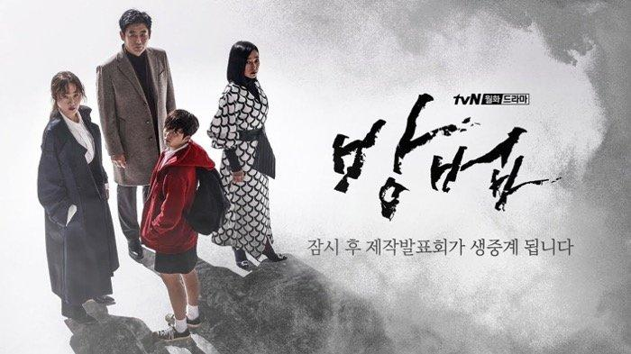
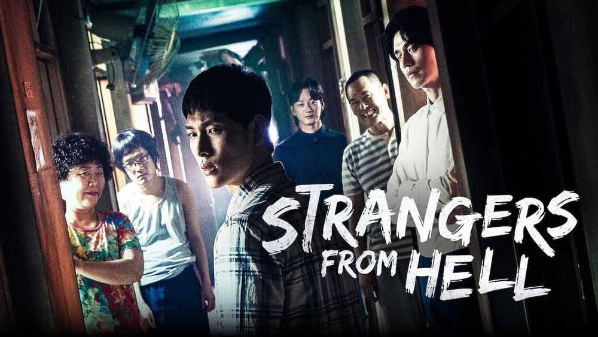

-
1. Review Drama Korea Start Up
2. Film Korea Voice Of Silence
3. Minho SHINee Resmi Selesai Wajib Militer
4. Rekomendasi Drama Korea Inspiratif yang Bikin Semangat
5. 5 Fakta Menarik soal Drama Korea True Beauty
6. Selain Break the Silence, Ini Film Dokumenter Lain tentang Perjalanan Karier BTS
7. BTS Rilis Album BE dan Video Klip Life Goes On
8. 5 Drama Korea Horor dan Thriller Terbaru
9. Profil Park Ji Sun, Komedian yang Meninggal Dunia Bersama Ibunya
10. Selain True Beauty, Ini Drama korea Adaptasi Webtoon yang Wajib Kamu Tonton
5 Drama Korea Horor dan Thriller Terbaru, Salah Satunya Tale of the Nine Tailed
Konten ini diproduksi oleh kumparan K-Pop 5 November 2020 17:10
Selalu ada drama Korea baru yang seru buat ditonton. Baik itu genre romantis, action, komedi, atau horor dan thriller.
Nah, ada drama bergenre horor dan thriller terbaru yang tidak boleh kamu lewatkan, nih. Apa saja, ya, kira-kira? Ini dia lima di antaranya!
KINGDOM
Klik disini untuk melihat trailer nya
Drama orisinal Netflix yang satu ini wajib masuk list nih, kalau lagi pengin nonton yang seram dan mencekam. Banyak perang berdarah, sampai aksi zombie mematikan yang bisa bikin penonton menjerit.
Kingdom mengisahkan serangan zombie dan perebutan tahta di era Joseon. Musim pertama yang dibintangi Ju Ji Hoon, Ryu Seung Ryong, hingga Bae Doo Na dikenal sukses pada tahun lalu, sementara Kingdom 2 masih dibintangi pemain yang sama dan tayang pada Maret 2020.
The Cursed
Klik disini untuk melihat trailer nya
Reporter Im Jin Hee (Uhm Ji-Won) berusaha mengungkap kasus kekerasan yang melibatkan Forest, yakni perusahaan IT terbesar di Korea Selatan. Ternyata, pimpinan Forest yakni Jin Jong Hyun (Sung Dong Il) sangat bergantung pada perdukunan.
Im Jin Hee akhirnya menemukan perusahaan konsultan spiritual yang terlibat dengan Forest. Lebih gelap dari yang dikira, Im Jin Hee pun terlibat dengan So Jin (Jung Ji-So) yang dirasuki oleh roh dan punya kemampuan khusus. The Cursed selesai tayang dengan 12 episode pada Maret 2020.
Strangers from Hell
Klik disini untuk melihat trailer nya
Meski tayang di akhir 2019, Strangers from Hell masih jadi drama thriller psikologis terpopuler dan kembali diperbincangkan di 2020.
Ceritanya tentang Yoon Jong Woo (Im Si Wan) yang baru saja pindah ke Seoul setelah diterima magang di sebuah perusahaan. Karena biaya terbatas, ia akhirnya memilih tinggal di kos-kosan murah bernama Eden Studio. Meski murah, banyak kematian misterius sampai tetangga aneh seperti Seo Moon Jo (Lee Dong-wook) yang makan daging mentah di Eden Studio.
365 Repeat the Year
Klik disini untuk melihat trailer nya
Mengusung genre thriller, misteri, dan fantasi, drama ini mengisahkan 10 orang peserta percobaan yang kembali tepat ke 365 hari yang lalu. Percobaan dari klinik misterius ini bertujuan untuk memberi kesempatan kepada para peserta, yang ingin mengubah suatu kesalahan agar hidup lebih sempurna.
Tapi, satu persatu dari kesepuluh peserta reset justru meninggal secara misterius. Dipimpin detektif Ji Hyung Joo (Lee Joon Hyuk) dan penulis komik thriller Shin Ga Young (Nam Ji Hyun) yang juga ikut percobaan itu, para peserta yang selamat berusaha mencari tahu penyebab kematian. Meski begitu mereka mulai curiga kalau pembunuhnya ada di antara mereka.
365: Repeat the Year tamat dengan 32 episode pada April 2020.
Tale Of The Nine Tailed

Klik disini untuk melihat trailer nya
Tale of the Nine Tailed mengangkat kisah gumiho atau rubah berekor sembilan laki-laki, yang sudah lama enggak muncul di drama Korea. Ada juga makhluk mistis lainnya, seperti naga ular Imoogi yang memakan banyak korban.
Cerita Tale of the Nine Tailed berpusat di gumiho bernama Yi Yeon (Lee Dong Wook) yang menetap di kota untuk menjaga dunia. Tapi hidupnya mulai enggak tenang saat sutradara produksi TV yang super gigih bernama Nam Ji Ah (Jo Bo Ah) bertekad untuk memburunya. Karena Nam Ji Ah, tragedi tragis Yi Yeon di masa lalu juga terancam berulang kembali.